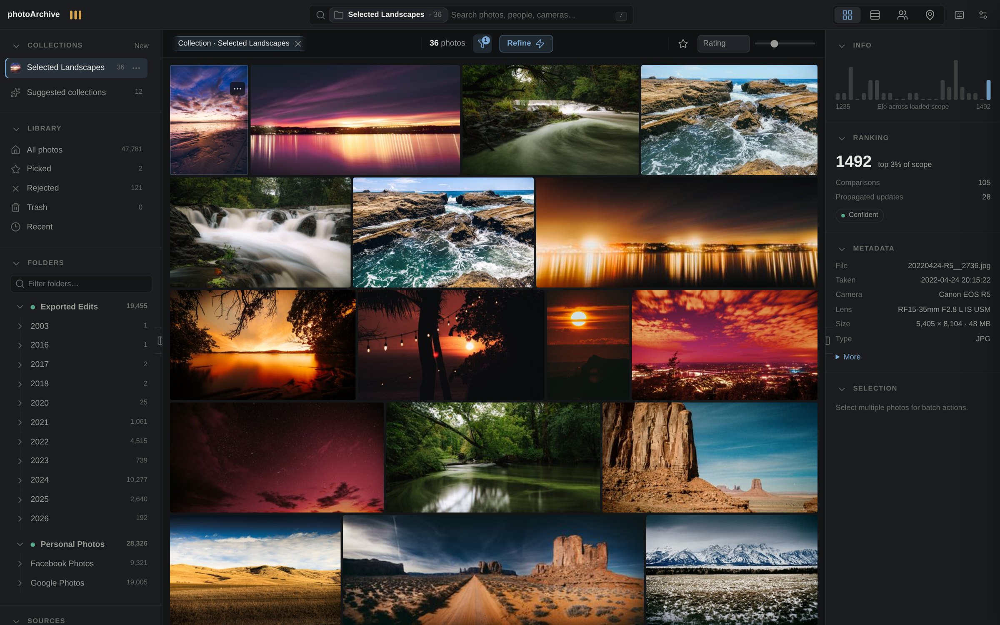
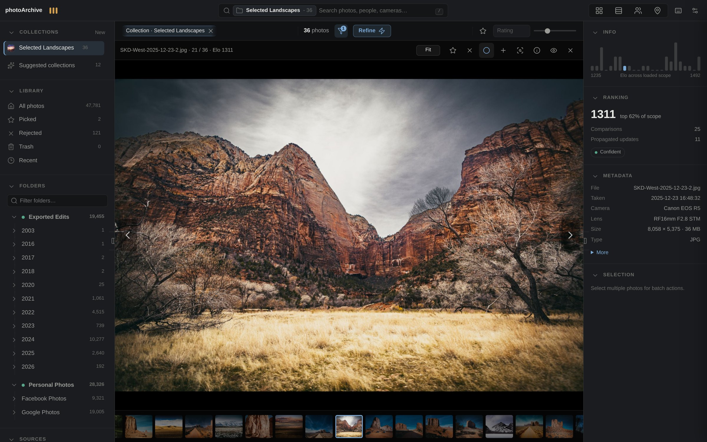
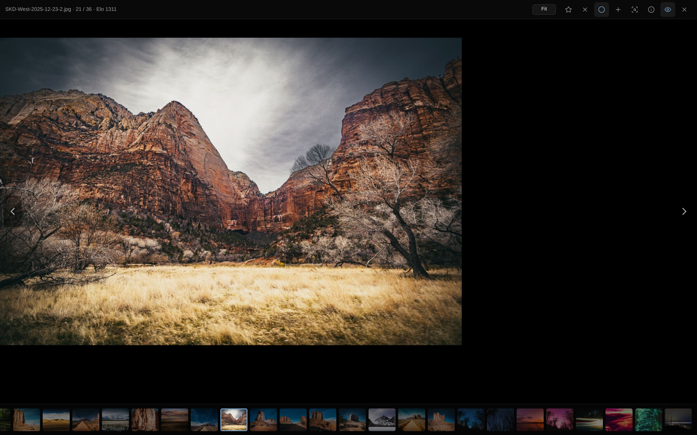
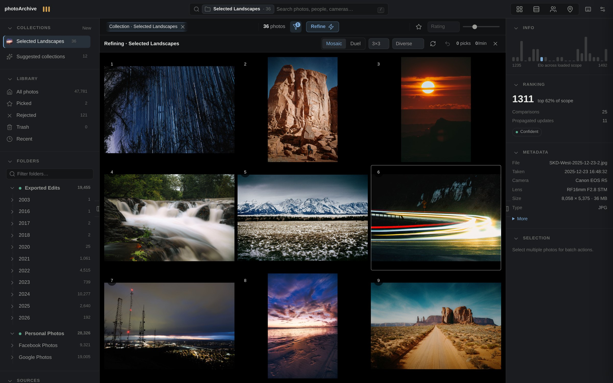
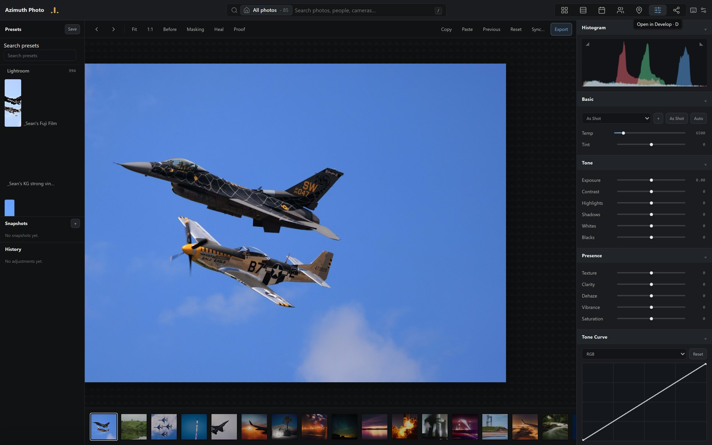
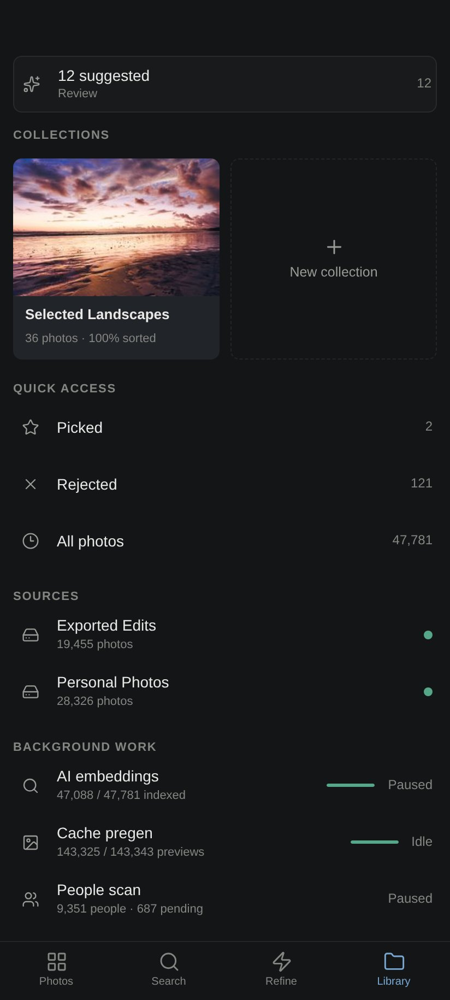

Your own photo cloud — with Lightroom Classic instincts.


Azimuth Photo is a self-hosted library for serious photo archives — and it is fast. Where Lightroom chugs, Azimuth Photo flies: browse terabytes of photos at lightning speed from your own computer, NAS, or server. Cull, rank, search, and share tens of thousands of images without uploading a single byte to anyone else's cloud.
It runs on your own hardware. Your originals stay under your control: scanning,
AI, sharing, and publishing use catalog data and generated derivatives; the one
explicit file-moving action is Trash, which moves originals into a restorable
.trash area until you empty it.
▶ Try it live — no install: azimuthphoto.com
The homepage isn't screenshots. It's the real library grid, the keyboard loupe, the Elo
Refine mosaic, and the fused search engine — running live in your browser on real catalog
data. Play with the app before you clone it.📖 The full story: the Field Log — how a 2023 weekend
"which photo is better?" toy became this, across 1,562 commits, with interactive demos.
Point it at terabytes on a sleepy USB drive and it still feels instant — the archive wakes the drive only when it truly needs original pixels.

Google Photos is effortless but owns your library. Lightroom Classic is powerful but heavy, subscription-bound, and was never built to be your archive's home. Azimuth Photo takes the best instincts of both:
A virtualized grid that stays smooth at 50,000 photos. Real folder tree with per-folder counts and instant scoping. Filter by camera, lens, file type, flag, rating floor, date — every facet composes. A timeline scrubber rides the right edge for date-sorted views. Zero-result scopes tell you why and offer the fix.
Stacks group what belongs together, LR Classic-style: burst sequences, export variants of one edit, and cross-source duplicates (that Facebook re-upload of your original) are auto-detected by three builders and collapse behind a single cover with a count badge. Expand in place, promote a new cover, or resolve a whole stack with one action.
Trash is safe by design. Deleting moves files to a .trash area on the same drive — fully restorable, byte-identical, with ratings and history intact. Nothing is permanently deleted until you empty the trash yourself.

A full canvas view, not a modal: metadata, Elo ranking, and a live histogram stay alongside the image. Zoom to 100% with Space, flag with P/X/U, cycle the info overlay with I, and press L for lights-out when it's just you and the photograph.


Refine shows you a mosaic — pick the best one. The winner is replaced with a fresh contender; the rest stay and keep competing. Behind it: an Elo system with uncertainty tracking, propagation through visually similar photos, and selectable strategies (Diverse, Explore, Compete). A quality meter tells you how sorted any scope is. Rank your whole archive, one two-second decision at a time.

Press D and any photo opens in a full non-destructive Develop module — a live WebGL2
editor with Lightroom-ordered panels: white balance, tone, presence, an interactive tone
curve, HSL, masking (brush / linear / radial / luminance / color-range, plus AI subject and
sky masks), heal, crop, and history.
Three engines answer every query and their results are fused:
Reciprocal-rank fusion + reranking combine all three, and the omnibox shows live photo results, facet completions (camera:, lens:, folder:…), and natural date parsing as you type. All models run locally — search quality is measured by a built-in eval harness, not vibes.
Local face detection (InsightFace) clusters faces into people entirely on your machine. Name them, merge duplicates, filter any view by who's in the frame. No cloud, no face data leaving your network — the workers only ever read the app's own cached previews, never your originals.
Share any collection as a private gallery link:
Website publishing writes static gallery bundles and a manifest.json into your own site folder, then can run one optional hook command. See Publishing Static Galleries.
Zip export of any filtered view (originals or previews) with symlink-safe path hardening, size budgets, and manifest reporting.

An installable PWA at /m: fast timeline with pinch density, pull-to-refresh, one-handed bottom action bars, haptics, offline-aware states, and an Android Back button that closes layers the way a native app would. Collections, search, refine duels, and people — all on your phone, over your own network (Tailscale pairs beautifully).
git clone https://github.com/Sean-Kenneth-Doherty/azimuth-photo.git
cd azimuth-photo
cd web
python -m venv .venv && .venv/bin/pip install -r requirements.txt
cd ..
./scripts/photoarchive-server start
Open http://localhost:8000, add a source folder in the system drawer, and let the scanners run. AI features (semantic search, captions, faces) activate when you install the local models from Background Work — everything works without them, and gets smarter with them.
Choose the install path that fits your library in Install Azimuth Photo, then use Getting started to build your first catalog.
Azimuth Photo is developed against the author's own 47,000-photo working archive — every screenshot above is that real library running on a single machine with an RTX 2060 Super. Your photos are your own; the app ships empty and hungry.
One repo, many faces — hub server, desktop web UI (/d), mobile PWA (/m), laptop satellite mode, native Windows shell (desktop/), Android app (android/). The full map of checkouts, branches, data directories, and how to run or deploy each face is in docs/TOPOLOGY.md.